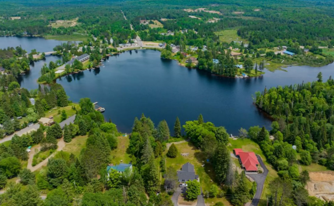
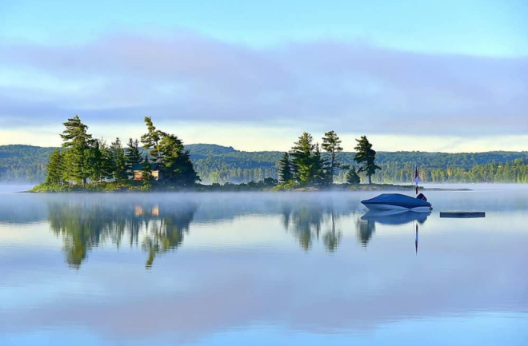
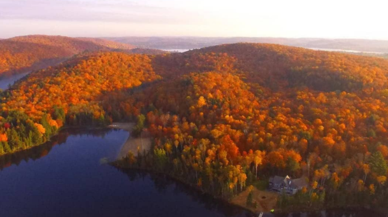
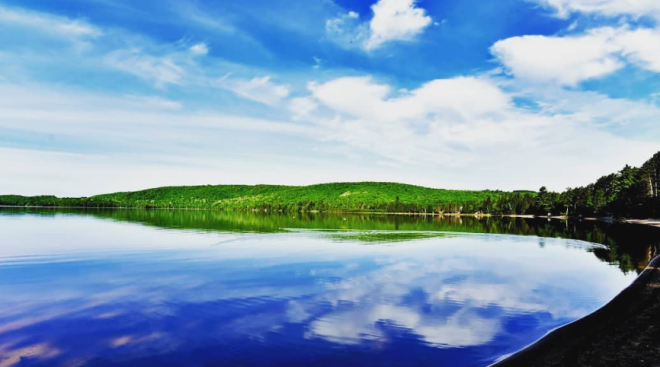

Kearney小镇位于美丽的Huntsville以北25分钟车程处，地处度假区的中心地带，被誉为安省“最大的小镇”。

据blogTO报道，Kearney小镇周围环绕着纯净的湖泊和茂密的森林，如果您想暂时摆脱多伦多的繁忙生活方式，这里是理想的度假胜地。
这里提供一些最好的户外活动，包括雪地摩托、钓鱼、徒步旅行、划船和全地形车。
这里的Algonquin Park公园空间宽敞，拥有三个入口，是一片广阔而美丽的自然区，提供无尽的冒险机会，是加拿大最好的公园之一。
无论您是喜欢野外露营、划独木舟还是徒步旅行，Algonquin Park公园都是您的完美背景。
公园的野生动物种类繁多，风景宁静，是自然爱好者和户外运动爱好者的天堂。

Kearney小镇的魅力还在于其广阔的528平方公里土地，与其只有974人的常年人口形成鲜明对比。这种独特的融合让这里获得了“安省最大的小镇”称号，是广阔的荒野与小镇文化交相辉映的地方。
如果不去Kearney Legion Hall大厅内的 DJ’s Bar and Grill餐馆，那么Kearney之旅就不算完整。这个地方散发着小镇的魅力，提供经典的加拿大主食，如炸鱼薯条、牛排和鸡蛋、热汉堡和烤牛肉晚餐。光是香气就足以吸引您，友好、热情的氛围使其成为当地人和游客的最爱。如果您想体验典型的小镇用餐体验，DJ’s 就是您的不二之选。
另一个当地的瑰宝是 Pit Stop Cafe，这是另一家以丰盛的早餐和浓咖啡而闻名的经典小镇餐馆。这是您开始新的一天的方式，菜单涵盖了您对早餐的所有渴望。

轻松的氛围和友好的服务使其成为您在城里时必去的地方。虽然许多人前往Kearney体验艰苦的生活，但并不是每个人都适合在偏僻的森林中露营。对于那些喜欢舒适生活的人来说，Sand Lake Cottages & Inn酒店提供美丽的湖畔住宿，内设防寒小屋。
这个度假村让您可以享受安省的郊外，距离镇上的杂货店和餐馆仅有很短的车程。小屋采用木炉和燃气供暖，无论在哪个季节都能为您提供舒适。

Kearney将自然美景与小镇魅力融为一体，使其成为安省最佳旅游目的地之一。从探索Algonquin Park公园到享受当地美食和舒适的住宿，在这个“大小镇”里，无论在哪个季节，每个人都能找到自己喜欢的活动。